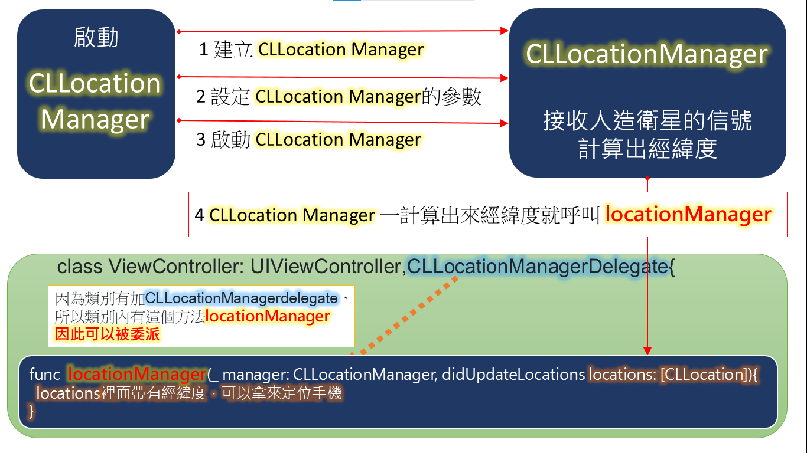

第7章 頁面轉移(segue)與Apple Map
如下面所示，有兩個類別View1和View2，請問行號23會印出多少?
上面行號19和24分別產生View2類別的物件，19的x被加到2，和24的x無關，
那麼物件究竟是甚麼呢?
物件 → 在記憶體中挖一塊區域，然後按照類別的內容在該區域產生可執行的變數和方法
以手機程式來說，有兩個view controller，A和B，當你在A view時，實際上是在執行類別A的物件a，
從A要跳到B時，就是產生一個B類別物件b，然後去執行物件b，
當你回到View A再次跳去View B，實際上是又再產生另一個B類別物件b'，和剛剛那個b物件是不同的兩個物件，
雖然都是B類別。
App一啟動，出現會員登入畫面，登入成功就進入另一個畫面，
畫面內，可能是一些功能選項，點選功能選項，開啟其功能畫面來使用。
這些每一個畫面都必須個別設計。
我們就用view來稱呼這些畫面。storyBoard故事板就是用來放這些view，
segue 就是讓我們設定view和view之間的轉移。
看一下下面的圖案，當整個程序完成後，你覺得文字輸入格會是0還是2
所以每次轉移到view都是建立一個新的view物件，然後segue過去。
像前面的兩個view分別是兩個物件，當你要轉移到另一個view之前，都是建立一個新的view物件，
再轉移過去，因為是第一個view建立了第2個view物件，所以其實我們是知道第2個view物件的記憶體位址，
所以我們可以在第2個view宣告變數，然後把要傳過去的資料指定給這個變數
試著在第一個view放一個文字輸入格，輸入文字後，按下《跳到View2》按鈕，然後View2的lab會顯示你在View1輸入的文字
viewDidLoad（）方法是一個《物件被建立之後》 在《view被顯示之前》 會被執行的方法
也就是 《view物件建立》 → 《執行viewDidLOad()方法》 → 《顯示view》
所以View2在顯示之前會先把x放到lab標籤後再顯示
v2=segue.destination就是新建view2的記憶體位置，我放到v2變數去
我的程式View2類別名稱是ViewController111111 ，
所以v2=segue.destination as! ViewController111111 強制轉型那個記憶體位置為View2類別
v2.x=data.text 就是把data放到View2的x
而view2在顯示前會去執行viewdidload，把x放到lab標籤後再顯示
兩者不同在於按鈕發動的segue，一按就轉移，你沒辦法不要，所以你可以用在一些功能選項按鈕
view發動的segue，必須使用方法perform Segue才能轉移，所以你可以在轉移前做判斷是否要跳，例如會員登入成功才轉移
如果使用按鈕發動的segue，則不管會員登入成功與否都會轉移
這邊會介紹兩個工具CoreLocation框架和Mapkit，
為了保護個人隱私，所以必須加上隱私權控制
在專案中有一個info.plist檔案，點滑鼠右鍵，open as/source code，
加入下面的隱私權設定，那麼在使用定位時，就會出現一個對話框，徵詢使用者是否允許
在iOS中通過CoreLocation框架進行定位操作，也就是抓GPS。

當你要求一個裝置幫你去計算經緯度，他不可能同步的給你經緯度，當他在計算的時候，
你的程式要在那邊等經緯度嗎？這樣你有可能會等很久，而app在等的時候並無法做其他的事情,
所以當我們要求一個裝置幫你去計算經緯度之後，我們就不理他繼續做其他的工作了
取而代之，當裝置一旦計算出來經緯度他就去呼叫一個處理程式，來處理經緯度。
那麼他怎麼知道怎麼知道該呼叫那一個處理程式呢？
就是指定他的delegate委派到一個類別（有加上CLLocationManagerDelegate協定的類別）
該類別內就會有一個方法叫做 locationManager
locationManager 接收經緯度，所以我們可以在上面寫程式來應用經緯度
下面程式碼要注意看這幾個問題，
要實現定位功能需要使用CoreLoaction中CLLocationManager類，下面是這個類的使用
import CoreLocation
<key>NSLocationWhenInUseUsageDescription</key>
<string></string>
<key>NSLocationAlwaysAndWhenInUseUsageDescription</key>
<string></string>
當這些個步驟完成之後，GPS位置偵測就啟動，只要去override
func locationManager(_ manager: CLLocationManager, didUpdateLocations locations: [CLLocation]) {
就可以在locaions裡面取得經緯度
記得離開APP要停止取得定位點，所以在viewDidDisappear加上下面程式GPS不會依值偵測
override func viewDidDisappear(_ animated: Bool){
// 停止取得定位點
locationManager.stopUpdatingLocation()
}
1 加入程式庫
import MapKit
2 從元件庫拖曳MKMapView
3 建立IBOutlet
4 剛剛只是取得位置印出來
現在取得位置 並且設定地圖
以取得位置 為中心點
縮放比例 0.05 0.05
func locationManager(_ manager: CLLocationManager, didUpdateLocations locations: [CLLocation]) {
// 取得現在位置
let curLocation:CLLocation = locations[0]
// 以現在位置為中心點
let location = CLLocationCoordinate2D(
latitude: curLocation.coordinate.latitude,
longitude: curLocation.coordinate.longitude
)
// 設定地圖顯示區域、中心點和縮放比例
let span = MKCoordinateSpan(latitudeDelta:0.05, longitudeDelta: 0.05) // 縮放比例
let region = MKCoordinateRegion(center: location, span: span)
mapView.setRegion(region, animated: true)
}
下面程式可以插旗子
let annotation = MKPointAnnotation()
annotation.coordinate = CLLocationCoordinate2D(latitude: 11.12, longitude: 12.11)
mapView.addAnnotation(annotation)
把美食專案的點選事件的那一堆alert都刪除，改成點選後會出現一個viewController(稱為 detailView )，
內容是所選那一家餐廳資訊，另外加上地圖顯示餐廳的位置，餐廳的經緯度可以自己假設。
你可能會用到 《tableView.indexPathForSelectedRow()》，它可以傳回來你剛剛點選row的indexPath
所以你可以在prepare中，使用它取得所點選餐廳的資訊傳到detailView